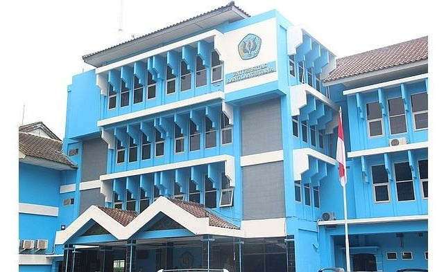

Selamat Datang Calon Mahasiswa, Di
UNIVERSITAS LANGLANGBUANA
SELAMAT MENGIKUTI UJIAN MASUK , SILAHKAN
LOG IN

SELAMAT MENGIKUTI UJIAN MASUK , SILAHKAN
LOG INUniversitas Langlangbuana
Universitas Langlangbuana
Menjadi program studi unggulan untuk menghasilkan penegak hukum profesional dan inovatif di tingkat Nasional pada tahun 2025.
1. Menyelenggarakan program pendidikan dan pengajaran secara profesional, dan inovatif dalam bidang ilmu hukum.
2. Melaksanakan penelitian berbasis penegakkan hukum yang dapat menunjang pengembangan penegak hukum yang profesional dan inovatif di tingkat Nasional.
3. Mengadakan kegiatan pengabdian kepada masyarakat secara edukatif, konsisten dan terprogram dengan menekankan telaah dan kajian bidang ilmu hukum.
4. Mengembangkan sistem penjaminan mutu internal berbasis Standar Nasional Perguruan Tinggi (SNPT).
5. Menjalin kerjasama di tingkat Nasional dengan pihak-pihak terkait dalam upaya mengembangkan program studi dan sumberdaya manusia (lulusan) yang profesional dan inovatif dalam bidang hukum.
1. Menghasilkan lulusan yang profesional dan inovatif dalam menerapkan, mengembangkan penegakkan hukum di tingkat Nasional.
2. Menghasilkan lulusan yang mampu melakukan kajian ilmiah untuk memecahkan berbagai permasalahan hukum (mampu beracara di pengadilan) di tingkat Nasional.
3. Menghasilkan lulusan yang professional dan inovatif dalam memberikan pelayanan kepada masyarakat di tingkat Nasional.
4. Terlaksananya sistem penjaminan mutu internal sesuai Standar Nasional Perguruan Tinggi (SNPT).
5. Terjalinnya kemitraan di tingkat regional dan nasional dengan pihak-pihak terkait dalam upaya mengembangkan program studi dan lulusan yang professional dan inovatif dalam bidang hukum.
| Dekan | Dr. Hj. Hernawati RAS, S.H., M.Si. |
| Wakil Dekan I | Eni Dasuki Suhardini, S.H., M.H. |
| Wakil Dekan II | Sri Mulyati Chalil, S.H., M.H. |
| Wakil Dekan III | Dani Durahman, S.H., M.H. |
| Website Fakultas | fh.unla.ac.id |
| Ketua Prodi | Dini Ramdania, S.H., M.H. |
| Sekretaris prodi | Rachmat Suharno, S.H., M.H. |
| Kepala Lab | H. Riyanto Sutaryo Akhmadi, S.H., M.H. |
| NO | Nama Dosen Tetap | Jabatan Akademik |
|---|---|---|
| 1. | Prof. Dr. Mangantar Daud Silalahi, S.H. | Guru besar |
| 2. | Dr. H. R. AR. Harry Anwar, S.H., M.H. | Lektor Kepala |
| 3. | Dr. H. Kuntana Magnar, S.H., M.H. | Lektor Kepala |
| 4. | Dr. Hernawati RAS, S.H., M.Si. | Lektor Kepala |
| 5. | Antonia Intarti, S.H., M.Si. | Lektor Kepala |
| 6. | Dr. Atma Suganda, S.H., M.Hum. | Lektor Kepala |
| 7. | Meima, S.H., M.H. | Lektor Kepala |
| 8. | Hj. Sri Pursetyowati, S.H., M.H. | Lektor Kepala |
| 9. | Dr. H. Dudu Duswara, S.H., M.Hum. | Lektor Kepala |
| 10. | Sri Mulyati Chalil, S.H., M.H. | Lektor |
| 11. | Ai Marliah, S.H., M.H. | Lektor |
| 12. | H. Riyanto Sutaryo Akhmadi, S.H., M.H. | Lektor |
| 13. | Eni Dasuki Suhardini, S.H., M.H. | Lektor Kepala |
| 14. | Sugeng Rahardja, S.H., M.H. | Lektor |
| 15. | Hj. Yeti Kurniati, S.H., M.H. | Lektor |
| 16. | Aep Sulaeman, S.H., Sp.1. | Lektor |
| 17. | Dewi Rohayati, S.H., M.H. | Lektor Kepala |
| 18. | Nani Suryani, S.H., M.H. | Lektor |
| 19. | Atang Hidayat, S.H., M.H. | Lektor |
| 20. | Dini Ramdania, S.H., M.H. | Lektor |
| 21. | Hana Krisnamurti, S.H., M.H. | Lektor |
| 22. | Dr. Deny Haspada, S.H., Sp.1. | Lektor |
| 23. | Dr. Jafar Sidik, S.H., M.H. | Lektor |
| 24. | Dr. Joko T. Suroso, S.H., M.H. | Lektor |
| 25. | Dani Durahman, S.H., M.H. | Asisten Ahli |
| 26. | Rahmat Suharno, S.H., M.H. | Asisten Ahli |
| 27. | Inda Nurdahniar, S.H., M.Hum. | - |
| 28. | Ryan Fani, S.H., M.H. | - |
| 29. | Farah Gitty Devianti, S.H., M.H. | - |
| 30. | Devi Elora, S.H., M.Kn. | - |
| 31. | Cecep Sutrisna, S.H., M.H. | - |
Universitas Langlangbuana
| Dekan | Dr. Gun Gun Gunawan, S.E., Ak., M.M. |
| Wakil Dekan I | Wawan Hermawan, S.E., M.Si. |
| Wakil Dekan II | Nita Kanya, S.E., M.M. |
| Wakil Dekan III | Tanty Sondary, S.E., M.M. |
Program Studi Manajemen S1 |
|
| Terakreditasi | "B" |
| Ketua | Taufik Sadikin, S.E., M.M. |
| Sekretaris | Inne Satyawisudarini, S.E., M.M. |
Visi
Menjadi Program Studi Manajemen yang menekankan pada keunggulan kompetitif dalam era kompetisi global dengan mengembangkan semangat kewirausahaan pada tahun 2020.
Misi
1. Mengelola Program Studi secara profesional dan berkinerja tinggi melalui suasana pendidikan yang kondusif, dengan pengembangan kurikulum, pengajaran, menganut kebebasan akademik yang bertanggung jawab berdasarkan integritas keilmuan.
2. Mengembangakan penelitian yang berkelanjutan dalam bidang manajemen yang mampu mendorong kemajuan dunia usaha, khususnya usaha kecil dan menengah.
3. Mengembangkan pemberdayaan dan pelayanan masyarakat melalui pelatihan dalam bidang manajemen dan dunia usaha yang mampu menciptakan serta mengembangkan usaha kecil dan menengah.
Tujuan
1. Menghasilkan lulusan guna mengisi kebutuhan tenaga-tenaga profesional dalam bidang manajemen, mempunyai jiwa wirausaha dan berperan serta dalam menciptakan lapangan usaha secara mandiri.
2. Menghasilkan lulusan yang mampu menguasai dan menerapkan ilmu manajemen dalam bidang manajemen pemasaran, manajemen keuangan, manajemen sumber daya manusia dan manajemen operasi.
3. Mampu menciptakan lulusan dengan kualifikasi :
a. Indeks Prestasi (IP) rata-rata > 3,00.
b. Waktu Penyelesaian studi rata-rata 4 tahun.
c. Mampu berkomunikasi dengan bahasa asing (Bahasa Inggris) dengan nilai Test of English as Foreign Language (Proficiency) > 450.
4. Menghasilkan wirausaha-wirausaha tangguh dan mandiri dalam kompetisi global, yang dilandasi dengan semangat kewirausahaan dalam mengembangkan usaha kecil dan menengah, dengan indikator :
a. Memiliki jiwa kewirausahaan.
b. Memiliki keterampilan Manajerial : Personal Skills, Interpersonal Skills, Group Skills.
Universitas Langlangbuana
| Dekan | Dr. Gun Gun Gunawan, S.E., Ak., M.M. |
| Wakil Dekan I | Wawan Hermawan, S.E., M.Si. |
| Wakil Dekan II | Nita Kanya, S.E., M.M. |
| Wakil Dekan III | Tanty Sondary, S.E., M.M. |
Program Studi Akuntansi S1 |
|
| Terakreditasi | "B" |
| Ketua | Mirna Nurwenda, S.E., M.Si., Ak. |
| Sekretaris | Uswatun Hasanah, S.E., M.Ak. |
Visi
Menjadi Program Studi Akuntansi yang berdaya saing dan menghasilkan sumber daya manusia profesional di bidang akuntansi di Jawa Barat dengan menerapkan semangat kewirausahaan pada tahun 2020.
Misi
1. Mengelola Program Studi secara profesional dan berkinerja tinggi melalui suasana pendidikan yang kondusif, dengan pengembangan kurikulum, pengajaran, yang didukung oleh sarana dan prasarana yang memadai pada tahun 2020.
2. Mengembangkan kemampuan dan keterampilan penelitian yang dapat memberikan kontribusi terhadap pengembangan ilmu akuntansi pada tahun 2020.
3. Mengembangkan kemampuan dan keterampilan profesional dalam menciptakan usaha mandiri serta meningkatkan kegiatan pelayanan kepada masyarakat melalui pelatihan dalam bidang akuntansi, perpajakan dan teknologi informasi pada tahun 2020.
Tujuan
1. Menghasilkan lulusan guna mengisi kebutuhan tenaga-tenaga profesional dalam bidang Akuntansi, serta memiliki semangat wirausaha dalam menciptakan lapangan usaha secara mandiri.
2. Menghasilkan lulusan yang memiliki keahlian khusus di bidang akuntansi keuangan, auditing, akuntansi manajemen, sistem informasi akuntansi dan akuntansi sektor publik.
3. Menghasilkan lulusan tangguh dan mandiri dalam kompetisi global dengan kualifikasi :
a. Indeks Prestasi (IP) rata-rata > 3,00.
b. Waktu Penyelesaian studi rata-rata 4 tahun.
c. Mampu berkomunikasi dengan bahasa asing (Bahasa Inggris) dengan nilai Test of English as Foreign Language (Proficiency) > 450.
d. Mampu dalam review pajak, yang terbukti dengan adanya pelatihan pajak Brevet A dan Brevet B.
4. Memiliki keterampilan wirausaha mandiri dari bidang-bidang ilmu akuntansi melalui : Personal Skills, Interpersonal Skills, Group Skills.
Universitas Langlangbuana
| Dekan | Dr. Tati Sarihati, Dra., M.Si. |
| Wakil Dekan I | Dr. Budi Kurniadi, Drs., M.Si. |
| Wakil Dekan II | Yusef Wandy, Drs., M.Si. |
| Wakil Dekan III | Riefky Krisnayana, S.Sos., M.Sn. |
| Terakreditasi | "A" |
| Ketua Program Studi | Ero Suhara, Drs., M.Si. |
| Sekretaris Program Studi | Emi Rachmawati, Dra., M.Si. |
Menghasilkan lulusan yang ahli di bidang politik pemerintahan dan otonomi daerah, kebijakan publik dan manajemen pemerintahan. Diselenggarakan dalam 8 (delapan) semester dan dapat diselesaikan kurang dari 4 (empat) tahun dengan beban studi 146 sks.
Website Fakultas : fisip.unla.ac.id
Universitas Langlangbuana
| Dekan | Dr. Tati Sarihati, Dra., M.Si. |
| Wakil Dekan I | Dr. Budi Kurniadi, Drs., M.Si. |
| Wakil Dekan II | Yusef Wandy, Drs., M.Si. |
| Wakil Dekan III | Riefky Krisnayana, S.Sos., M.Sn. |
| Terakreditasi | "B" |
| Ketua Program Studi | Nunung Hastika Ardiwijaya, Dra., M.Si. |
| Sekretaris Program Studi | Henny Setiani, Dra., M.Si. |
Menghasilkan Sarjana Ilmu Kesejahteraan Sosial yang mempunyai pengetahuan, keterampilan dan sikap profesional pekerjaan sosial serta mampu melaksanakan "fungsi sosialnya". Diselenggarakan dalam 8 (delapan) semester dan dapat diselesaikan kurang dari 4 (empat) tahun dengan beban studi 144 sks.
Website Fakultas : fisip.unla.ac.id
Universitas Langlangbuana
| Dekan | Dr. Tati Sarihati, Dra., M.Si. |
| Wakil Dekan I | Dr. Budi Kurniadi, Drs., M.Si. |
| Wakil Dekan II | Yusef Wandy, Drs., M.Si. |
| Wakil Dekan III | Riefky Krisnayana, S.Sos., M.Sn. |
| Terakreditasi | "B" |
| Ketua Program Studi | Dr. Wa Ode Nurul Yani, Dra., M.Si. |
| Sekretaris Program Studi | Rannie Dyah Khatamisari R, S.Sos., M.M. |
Menghasilkan Sarjana Ilmu Komunikasi yang mampu :
a) Memahami teori dan praktek bidang komunikasi.
b) Menguasai dasar-dasar ilmu pengetahuan serta metodologi ilmu komunikasi.
c) Memahami, meneliti, menemukan, merumuskan, dan menjelaskan cara-cara penyelesaian masalah-masalah komunikasi.
d) Menerapkan pengetahuan dan keterampilan teknologi komunikasi di era globalisasi serta pengabdian pada masyarakat.
Diselenggarakan dalam 8 (delapan) semester dan dapat diselesaikan kurang dari 4 (empat) tahun dengan beban studi 146 sks.
Website Fakultas : fisip.unla.ac.id
Universitas Langlangbuana
| Dekan | Dr. Tati Sarihati, Dra., M.Si. |
| Wakil Dekan I | Dr. Budi Kurniadi, Drs., M.Si. |
| Wakil Dekan II | Yusef Wandy, Drs., M.Si. |
| Wakil Dekan III | Riefky Krisnayana, S.Sos., M.Sn. |
| Terakreditasi | "B" |
| Ketua Program Studi | Dr. Lisdawati Wahyudin, Dra., M.Si. |
| Sekretaris Program Studi | Dedy Rahmat, S.IP., M.Si. |
Program Studi D III Kepolisian telah memperoleh penilaian akreditasi oleh Badan Akreditasi Nasional Perguruan Tinggi (BAN-PT) dengan nilai B. Hasil penilaian ini ditetapkan melalui Surat Keputusan BAN-PT No: 202/SK/BAN-PT/Ak-VIII/Dpl-III/2013 tanggal 23 Oktober 2013. Beban studi program Studi ini sekurang-kurangnya 118 sks yang terhimpun dalam 54 mata kuliah dan dijadwalkan untuk 6 (enam) semester.
UNLA merupakan penyelenggara pertama di Indonesia yang menyelenggarakan Program Studi D-III. Prospek lulusannya berpeluang untuk :
- Menjadi Anggota Polri
- Menjadi Anggota Satpol PP
- Menjadi Anggota Kepolisian Khusus (Polsus)
- Menjadi Penyidik PNS
- Menjadi Komandan / Anggota Pengamanan Swakarsa
Visi
Menjadi Program Studi DIII Kepolisian yang menghasilkan tenaga-tenaga profesional pengemban fungsi kepolisian di bidang Pengamanan, Penyelidikan (Intelijen), dan Penyidikan pada tahun 2016.
Misi
Mendidik mahasiswa kepolisian yang mempunyai pengetahuan, keterampilan, dan sikap profesional di bidang Pengamanan, Penyelidikan, dan Penyidikan.
Mengembangkan ilmu kepolisian yang inovatif dan adaptif guna mengoptimalkan pelaksanaan fungsi kepolisian.
Mengembangkan paradigma pengamanan, penyelidikan, dan penyidikan secara profesional.
Website Fakultas : fisip.unla.ac.id
Universitas Langlangbuana
| Dekan | Aas Shofyanis, Drs., M.Ed., PhD. |
| Wakil Dekan I | Hj. Elly Ratnaningrum, Dra., M.Pd. |
| Wakil Dekan II | Cucu Lisnawati, S.Pd., M.Pd. |
| Wakil Dekan III | Irmawan, S.Pd., M.Pd. |
| Terakreditasi | "B" |
| Ketua Prodi | Hj. Uus Mazilatusifa, Dra., M.Si. |
| Sekretaris Prodi | Fugiyar Suherman, S.Pd., M.Pd. |
Menghasilkan lulusan tenaga pendidik profesional yang memiliki kompetensi utama sebagai guru ekonomi / akuntansi dan kompetensi pendukung sebagai tenaga profesional yang berkemampuan bekerja di bidang lain selain tenaga pendidik, di antaranya dalam bidang: Manajemen Bisnis dan Komputer Akuntansi. Kurikulum berbasis kompetensi dengan beban belajar 150 sks yang diselenggarakan dalam delapan semester.
Universitas Langlangbuana
| Dekan | Aas Shofyanis, Drs., M.Ed., PhD. |
| Wakil Dekan I | Hj. Elly Ratnaningrum, Dra., M.Pd. |
| Wakil Dekan II | Cucu Lisnawati, S.Pd., M.Pd. |
| Wakil Dekan III | Irmawan, S.Pd., M.Pd. |
| Terakreditasi | "B" |
| Ketua Prodi | Iwan Gunawan, S.Pd., M.Pd., M.Pmat. |
| Sekretaris Prodi | Rasyid Ridho, S.Pd., M.Pd. |
Visi
Menjadi program studi yang menghasilkan guru Matematika yang profesional pada tahun 2020.
Misi
1. Menyelenggarakan pendidikan dan pengajaran, pendidikan profesi guru yang inovatif dalam bidang pendidikan Matematika.
2. Menyelenggarakan penelitian dan penulisan karya ilmiah dalam bidang pendidikan dan pembelajaran Matematika yang mendukung pengembangan dan penerapan inovasi dalam pendidikan dan pembelajaran sehingga dapat dimanfaatkan bagi peningkatan kualitas akademik program studi dan kualitas profesional guru.
3. Melaksanakan program pengabdian kepada masyarakat di bidang pendidikan dan pembelajaran sebagai tanggung jawab sosial untuk meningkatkan kualitas pendidikan
4. Menyelenggarakan kegiatan kemahasiswaan untuk menciptakan lingkungan pendidikan yang kondusif untuk membentuk kepribadian calon guru yang profesional
5. Melaksanakan kerja sama dengan berbagai pihak dalam bidang pendidikan, penelitian, dan pengabdian kepada masyarakat secara efektif, efisien dan berkesinambungan untuk meningkatkan daya saing serta pengembangan dan keberlangsungan program studi pendidikan Matematika.
6. Menyelenggarakan pengelolaan dan pelayanan yang baik untuk menciptakan lingkungan yang kondusif
Tujuan
Tujuan utama pembinaan dan pengembangan yang dilaksanakan adalah terwujudnya visi serta terlaksananya misi UNLA yang telah ditetapkan, meliputi :
1. Menghasilkan lulusan guru Matematika yang profesional tersertifikasi di tahun 2016
2. Menghasilkan penelitian dan karya tulis ilmiah pendidikan dan pembelajaran yang berkualitas dan dipublikasikan dalam jurnal ilmiah
3. Menyelenggarakan pengabdian masyarakat dalam bidang pendidikan dan pengajaran yang dapat memberikan kontribusi dan dapat membantu memecahan masalah pendidikan dan pembelajaran
4. Menyelenggarakan kegiatan kemahasiswaan untuk membentuk sikap mental dan kepribadian yang bertanggung jawab, bermoral, berlandaskan iman dan taqwa, terintegrasi dengan pengembangan minat, bakat, kreatifitas untuk menggali potensi diri yang dimiliki oleh mahasiswa sebagai calon guru Matematika yang profesional.
5. Memperoleh masukan dari mahasiswa, alumni, dan stakeholders dalam hal penyusunan visi, misi, dalam penyelenggaran kegiatan akademik dan non akademik di program studi
Pimpinan Program Studi
| Ketua | Hj. Puji Budilestari, Dra., M.Pd. |
| Sekretaris | Irmawan, S.Pd., M.Pd. |
Dosen Pengajar
| No | Nama Dosen | Jabatan Akademik |
|---|---|---|
| 1. | Prof. H. E. T Ruseffendi, S.Pd., M.Sc., Ph.D. | Guru Besar |
| 2. | Prof. Dr. H. Wahyudin, M.Pd. | Guru Besar |
| 3. | Dr. H. Mumun Syaban, Drs., M.Si. | Lektor Kepala |
| 4. | Dr. Marthen Tapilouw, Drs., M.Si. | Lektor Kepala |
| 5. | H. Erman Suherman, Drs., M.Pd | Lektor Kepala |
| 6. | Hj. Puji Budilestari, Dra., M.Pd. | Lektor Kepala |
| 7. | Hj. Reviandari Widyatiningtyas, Dra., M.Pd. | Lektor Kepala |
| 8. | Hj. Elly Retnaningrum, Dra., M.Pd. | Lektor Kepala |
| 9. | Irmawan, S.Pd., M.Pd. | Asisten Ahli |
| 10. | Iwan Gunawan, M.Pd., M.PMat. | Tenaga Pengajar |
| 11. | Farid Soleh Nurdin, S.Kom., M.Stat | Tenaga Pengajar |
| 12. | Moch. Rasyid Ridha, S.Pd., M.Pd. | Tenaga Pengajar |
Universitas Langlangbuana
| Dekan | Aas Shofyanis, Drs., M.Ed., PhD. |
| Wakil Dekan I | Hj. Elly Ratnaningrum, Dra., M.Pd. |
| Wakil Dekan II | Cucu Lisnawati, S.Pd., M.Pd. |
| Wakil Dekan III | Irmawan, S.Pd., M.Pd. |
| Terakreditasi | "B" |
| Ketua Prodi | Farid S. Nurdin, M.Stat. |
| Sekretaris Prodi | Deasy Rahmawati, S.Pd., M.Pd. |
Menjadi lembaga pendidikan guru sekolah dasar yang maju dan menghasilkan pendidik yang memiliki kompetensi, mampu mengembangkan kreativitas peserta didik, serta menguasai teknologi informasi dan seni, pada 2022.
1. Menyelenggarakan proses pembelajaran yang berkualitas dan professional yang dilandasi keimanan dan ketakwaan kepada Tuhan Yang Maha Esa.
2. Menyelenggarakan penelitian dalam bidang pendidikan, Khususnya di Sekolah Dasar sesuai dengan kebutuhan pengembangan dan pembangunan Pendidikan, baik di dalam maupun di luar negeri.
3. Mengoptimalkan pemberdayaan dan meningkatkan kualitas kinerja dosen dan tenaga kependidikan lainnya.
4. Melakukan kerjasama dalam bidang pendidikan, penelitian dan pengabdian kepada masyarakat dengan berbagai perguruan tinggi, dengan instansi/institusi lainnya, serta dengan setiap pemangku kepentingan sesuai dengan kebutuhan pengembangan pendidikan di Sekolah Dasar.
5. Memberikan pengetahuan dan keterampilan pada bidang teknologi informasi dan seni kepada pendidik (Dosen) dan Mahasiswa, sehingga dapat menghasilkan lulusan yang kreatif dan mampu bersaing.
1. Meningkatkan pengetahuan, keterampilan, kemampuan dan kualifikasi pendidikan guru SD, baik yang telah berdinas, maupun sebagai Fresh-students agar memiliki kualifikasi pendidikan Strata Satu PGSD.
2. Meningkatkan kualifikasi guru SD dengan memiliki keluasan dan kedalaman dalam bidang ilmu, Pengetahuan, teknologi dan seni, baik yang bersifat pemantapan materi pelajaran maupun perluasan wawasan dan pendalaman ilmu.
3. Meningkatkan penghargaan masyarakat luas terhadap pengabdian dan dedikasi guru SD.
4. Mempersiapkan calon guru SD yang berkualifikasi SI PGSD yang sesuai dengan PP Nomor 19 Tahun 2005 tentang Standar Nasional Pendidikan, yaitu yang memiliki kompetensi paedagogi, kepribadian, profesional dan sosial.
| No | Nama Dosen | NIDN / NIDK / NUPN | Jabatan Fungsional | Gol |
|---|---|---|---|---|
| 1. | Prof. Dr. D Christina Viktoria, M.A | 8857150017 | Guru Besar | IV.e |
| 2. | H.A. Shofyanis, M.Ed., Ph.D | 8878000016 | Lektor | IV.c |
| 3. | H. Nano Sukmana, Drs., M.Pd | 0020045902 | Lektor Kepala | IV.b |
| 4. | Farid S Nurdin., M.Stat | 0428018602 | Asisten Ahli | III.c |
| 5. | Ike Anita., S.S., M.Pd | 0418096801 | Asisten Ahli | III.c |
| 6. | S. Rudie Juliantoro, S.Sos., M.Pd | 0428077404 | - | III.b |
| 7. | Sri Rohartati, S.Pd.SD., M.Pd | 0431058604 | Asisten Ahli | III.b |
| 8. | Yeti Nurhayati., S.Pd., M.Pd | 0407087803 | Asisten Ahli | III.b |
| 9. | Rina Kurnia., S.Pd., M.Pd | 0417059001 | Asisten Ahli | III.b |
| 10. | Deasy Rahmawati., S.Pd., M.Pd | 0412047406 | Asisten Ahli | III.b |
| 11. | Ludi Hermawan., M.Pd | 0412047406 | - | III.b |
| 12. | Nofrita., S.Pdi., M.Pd | 1025117903 | Asisten Ahli | III.b |
| 13. | Imam Jahrudin., M.Hum | 0414106702 | Asisten Ahli | III.b |
| 14. | Hesti Widiastuti., S.Pd., M.Pd | - | - | III.b |
| 15. | Ery Subekti., S.S., M.Pd | - | - | III.b |
| 16. | Nuri Annisa., S.Pd., M.Pd | 0431089002 | - | III.b |
| 17. | Rika W Sukamana., S.P., M.Pd | 0403056902 | - | III.b |
| No | Nama Dosen | NIDN / NIDK / NUPN | Jabatan Fungsional | Gol |
|---|---|---|---|---|
| 1. | Dr. Bambang Gatot Sugiarto, M.Pd | - | - | - |
| 2. | Dr. Nasem, M.MPd | - | - | - |
| 3. | Dr. Ace Iwan Suryawan, M.Hum | - | - | - |
| 4. | Dr. H. Sarbini, M.Ag | - | - | - |
Universitas Langlangbuana
| Dekan | Dr. Hj. Hennie Husniah, Dra., M.T. |
| Wakil Dekan I | KM Syarif Haryana, ST., MT |
| Wakil Dekan II | RD Octavia Maryanche Sujana, S.T., M.T. |
| Wakil Dekan III | Ramadona, S.T., M.T. |
| Terakreditasi | "B" |
Menghasilkan lulusan (Sarjana Teknik) yang profesional (ahli, bertanggung jawab dan berkesejawatan) dalam pengembangan industri dan kewirausahaan berdasarkan kondisi, peluang usaha, dan potensi daerah. Diselenggarakan dalam 8 (delapan) semester dan dapat diselesaikan kurang dari 4 (empat) tahun dengan beban studi 144 sks.
Website Fakultas : ft-unla.org
Website Prodi : teknik-industri-unla.id
Universitas Langlangbuana
| Dekan | Dr. Hj. Hennie Husniah, Dra., M.T. |
| Wakil Dekan I | KM Syarif Haryana, ST., MT |
| Wakil Dekan II | RD Octavia Maryanche Sujana, S.T., M.T. |
| Wakil Dekan III | Ramadona, S.T., M.T. |
| Terakreditasi | "B" |
Menghasilkan lulusan jurusan teknik sipil yang profesional serta mampu bersaing secara global. Diselenggrakan dalam 8 (delapan) semester dan dapat diselesaikan kurang dari 4 (empat) tahun dengan beban studi 144 sks.
Website Fakultas : ft-unla.org
Universitas Langlangbuana
| Dekan | Dr. Hj. Hennie Husniah, Dra., M.T. |
| Wakil Dekan I | KM Syarif Haryana, ST., MT |
| Wakil Dekan II | RD Octavia Maryanche Sujana, S.T., M.T. |
| Wakil Dekan III | Ramadona, S.T., M.T. |
| Terakreditasi | "B" |
Menghasilkan Arsitek (Sarjana Teknik) bertaraf global yang mampu bekerja secara profesional dalam rancang-bangun gedung-gedung yang berskala besar modern. merancang perencanaan kota dan pemukiman serta bangunan industri dan mengawasi proses pembangunan fisiknya. Diselenggarakan dalam 8 (delapan) semester dan dapat diselesaikan kurang dari 4 (empat) tahun dengan beban studi 144 sks.
Website Fakultas : ft-unla.org
Universitas Langlangbuana
| Dekan | Dr. Hj. Hennie Husniah, Dra., M.T. |
| Wakil Dekan I | KM Syarif Haryana, ST., MT |
| Wakil Dekan II | RD Octavia Maryanche Sujana, S.T., M.T. |
| Wakil Dekan III | Ramadona, S.T., M.T. |
| Terakreditasi | "B" |
Menghasilkan lulusan bidang enjinering/elektro (Sarjana Teknik) yang profesional, berdedikasi tinggi, berkepribadian nasional, sanggup bersaing pada bidangnya. Diselenggarakan dalam 8 (delapan) semester dan dapat diselesaikan kurang dari 4 (empat) tahun dengan beban studi 144 sks.
Website Fakultas : ft-unla.org
Universitas Langlangbuana
| Dekan | Dr. Hj. Hennie Husniah, Dra., M.T. |
| Wakil Dekan I | KM Syarif Haryana, ST., MT |
| Wakil Dekan II | RD Octavia Maryanche Sujana, S.T., M.T. |
| Wakil Dekan III | Ramadona, S.T., M.T. |
| Terakreditasi | "B" |
Menghasilkan lulusan Jurusan teknik Informatika yang profesional, berdaya saing tinggi di bidang teknologi informasi. Diselenggarakan dalam 8 (delapan) semester dan dapat diselesaikan kurang dari 4(empat) tahun dengan beban studi 146 sks.
Website Fakultas : ft-unla.org
Website Prodi : informatika.unla.ac.id